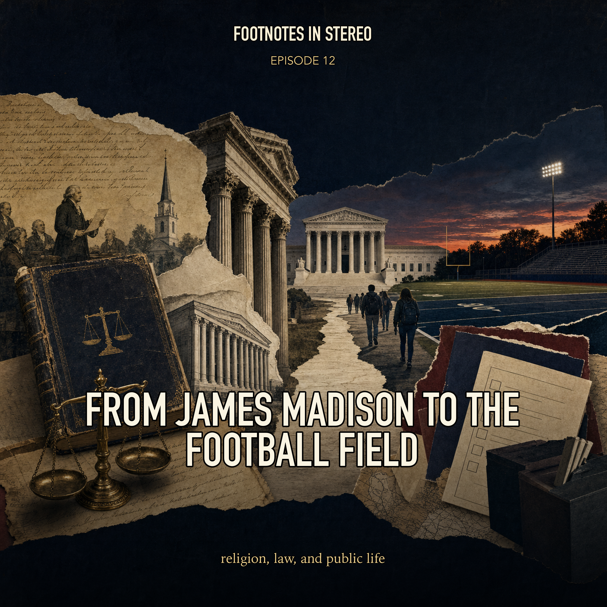

Episode 12 · Public episode
From James Madison to the Football Field
Religion has never been simply absent from American public life, and the law has never treated it as one simple thing. Mira and Theo trace Madison's arguments, the ban on religious tests, the First Amendment, Reynolds, free-exercise disputes, establishment doctrine, and Kennedy v. Bremerton to ask how legal ideas about belief, coercion, equality, and public institutions keep changing. Created with Gemini Notebook. The conversation and voices in this episode were generated with Gemini Notebook.
Sources
- James Madison, Memorial and Remonstrance against Religious Assessments - University of Chicago
- Interpretation of Religious Test Clause - Constitution Annotated
- Reynolds v. United States, 98 U.S. 145 (1879) - Library of Congress
- Kennedy v. Bremerton School District, 597 U.S. 507 (2022) - Supreme Court of the United States
Transcript
Machine transcript; lightly formatted and subject to correction.
Transcript processing. Check back shortly.